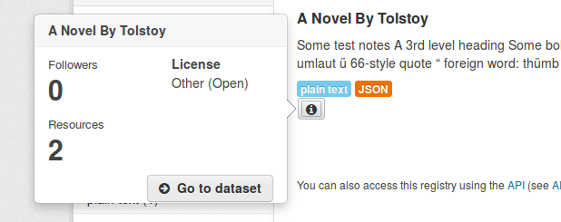
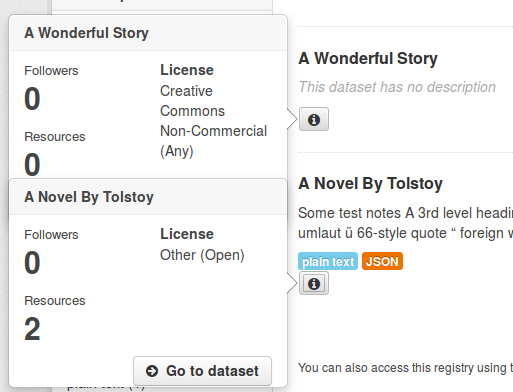

Customizing CKAN’s JavaScript¶
JavaScript code in CKAN is broken down into modules: small, independent units of JavaScript code. CKAN themes can add JavaScript features by providing their own modules. This tutorial will explain the main concepts involved in CKAN JavaScript modules and walk you through the process of adding custom modules to themes.
See also
This tutorial assumes a basic understanding of CKAN plugins and templating, see:
See also
This tutorial assumes a basic understanding of JavaScript and jQuery, see:
See also
- String internationalization
- How to mark strings for translation in your JavaScript code.
Overview¶
The idea behind CKAN’s JavaScript modules is to keep the code simple and easy to test, debug and maintain, by breaking it down into small, independent modules. JavaScript modules in CKAN don’t share global variables, and don’t call each other’s code.
These JavaScript modules are attached to HTML elements in the page, and enhance the functionality of those elements. The idea is that an HTML element with a JavaScript module attached should still be fully functional even if JavaScript is completely disabled (e.g. because the user’s web browser doesn’t support JavaScript). The user experience may not be quite as nice without JavaScript, but the functionality should still be there. This is a programming technique known as graceful degradation, and is a basic tenet of web accessibility.
In the sections below, we’ll walk you through the steps to add a new JavaScript feature to CKAN - dataset info popovers. We’ll add an info button to each dataset on the datasets page which, when clicked, opens a popover containing some extra information and user actions related to the dataset:
Initializing a JavaScript module¶
To get CKAN to call some custom JavaScript code, we need to:
Implement a JavaScript module, and register it with CKAN. Create the file ckanext-example_theme/ckanext/example_theme/fanstatic/example_theme_popover.js, with these contents:
// Enable JavaScript's strict mode. Strict mode catches some common // programming errors and throws exceptions, prevents some unsafe actions from // being taken, and disables some confusing and bad JavaScript features. "use strict"; ckan.module('example_theme_popover', function ($) { return { initialize: function () { console.log("I've been initialized for element: ", this.el); } }; });
This bit of JavaScript calls the ckan.module() function to register a new JavaScript module with CKAN. ckan.module() takes two arguments: the name of the module being registered ('example_theme_popover' in this example) and a function that returns the module itself. The function takes two arguments, which we’ll look at later. The module is just a JavaScript object with a single attribute, initialize, whose value is a function that CKAN will call to initialize the module. In this example, the initialize function just prints out a confirmation message - this JavaScript module doesn’t do anything interesting yet.
Note
JavaScript module names should begin with the name of the extension, to avoid conflicting with other modules. See Avoid name clashes.
Note
Each JavaScript module’s initialize() function is called on DOM ready.
Include the JavaScript module in a page, using Fanstatic, and apply it to one or more HTML elements on that page. We’ll override CKAN’s package_item.html template snippet to insert our module whenever a package is rendered as part of a list of packages (for example, on the dataset search page). Create the file ckanext-example_theme/ckanext/example_theme/templates/snippets/package_item.html with these contents:
{% ckan_extends %} {% block content %} {{ super() }} {# Use Fanstatic to include our custom JavaScript module. A <script> tag for the module will be inserted in the right place at the bottom of the page. #} {% resource 'example_theme/example_theme_popover.js' %} {# Apply our JavaScript module to an HTML element. The data-module attribute, which can be applied to any HTML element, tells CKAN to initialize an instance of the named JavaScript module for the element. The initialize() method of our module will be called with this HTML element as its this.el object. #} <button data-module="example_theme_popover" class="btn" href="#"> <i class="icon-info-sign"></i> </button> {% endblock %}
See also
Using data-* attributes on the Mozilla Developer Network.
If you now restart the development server and open http://127.0.0.1:5000/dataset in your web browser, you should see an extra info button next to each dataset shown. If you open a JavaScript console in your browser, you should see the message that your module has printed out.
See also
Most web browsers come with built-in developer tools including a JavaScript console that lets you see text printed by JavaScript code to console.log(), a JavaScript debugger, and more. For example:
If you have more than one dataset on your page, you’ll see the module’s message printed once for each dataset. The package_item.html template snippet is rendered once for each dataset that’s shown in the list, so your <button> element with the data-module="example_theme_popover" attribute is rendered once for each dataset, and CKAN creates a new instance of your JavaScript module for each of these <button> elements. If you view the source of your page, however, you’ll see that example_theme_popover.js is only included with a <script> tag once. Fanstatic is smart enough to deduplicate resources.
Note
JavaScript modules must be included as Fanstatic resources, you can’t add them to a public directory and include them using your own <script> tags.
this.options and this.el¶
Now let’s start to make our JavaScript module do something useful: show a Bootstrap popover with some extra info about the dataset when the user clicks on the info button.
First, we need our Jinja template to pass some of the dataset’s fields to our JavaScript module as options. Change package_item.html to look like this:
{% ckan_extends %}
{% block content %}
{{ super() }}
{% resource 'example_theme/example_theme_popover.js' %}
{# Apply our JavaScript module to an HTML <button> element.
The additional data-module-* attributes are options that will be passed
to the JavaScript module. #}
<button data-module="example_theme_popover"
data-module-title="{{ package.title }}"
data-module-license="{{ package.license_title }}"
data-module-num_resources="{{ package.num_resources }}">
<i class="icon-info-sign"></i>
</button>
{% endblock %}
This adds some data-module-* attributes to our <button> element, e.g. data-module-title="{{ package.title }}" ({{ package.title }} is a Jinja2 expression that evaluates to the title of the dataset, CKAN passes the Jinja2 variable package to our template).
Warning
Although HTML 5 treats any attribute named data-* as a data attribute, only attributes named data-module-* will be passed as options to a CKAN JavaScript module. So we have to named our parameters data-module-title etc., not just data-title.
Now let’s make use of these options in our JavaScript module. Change example_theme_popover.js to look like this:
"use strict";
/* example_theme_popover
*
* This JavaScript module adds a Bootstrap popover with some extra info about a
* dataset to the HTML element that the module is applied to. Users can click
* on the HTML element to show the popover.
*
* title - the title of the dataset
* license - the title of the dataset's copyright license
* num_resources - the number of resources that the dataset has.
*
*/
ckan.module('example_theme_popover', function ($) {
return {
initialize: function () {
// Access some options passed to this JavaScript module by the calling
// template.
var num_resources = this.options.num_resources;
var license = this.options.license;
// Format a simple string with the number of resources and the license,
// e.g. "3 resources, Open Data Commons Attribution License".
var content = 'NUM resources, LICENSE'
.replace('NUM', this.options.num_resources)
.replace('LICENSE', this.options.license)
// Add a Bootstrap popover to the HTML element (this.el) that this
// JavaScript module was initialized on.
this.el.popover({title: this.options.title,
content: content,
placement: 'left'});
}
};
});
Note
It’s best practice to add a docstring to the top of a JavaScript module, as in the example above, briefly documenting what the module does and what options it takes. See JavaScript modules should have docstrings.
Any data-module-* attributes on the HTML element are passed into the JavaScript module in the object this.options:
var num_resources = this.options.num_resources;
var license = this.options.license;
A JavaScript module can access the HTML element that it was applied to through the this.el variable. To add a popover to our info button, we call Bootstap’s popover() function on the element, passing in an options object with some of the options that Bootstrap’s popovers accept:
// Add a Bootstrap popover to the HTML element (this.el) that this
// JavaScript module was initialized on.
this.el.popover({title: this.options.title,
content: content,
placement: 'left'});
See also
For other objects and functions available to JavaScript modules, see Objects and methods available to JavaScript modules.
Default values for options¶
Default values for JavaScript module options can be provided by adding an options object to the module. If the HTML element doesn’t have a data-module-* attribute for an option, then the default will be used instead. For example...
Todo
Think of an example to do using default values.
Ajax, event handling and CKAN’s JavaScript sandbox¶
So far, we’ve used simple JavaScript string formatting to put together the contents of our popover. If we want the popover to contain much more complex HTML we really need to render a template for it, using the full power of Jinja2 templates and CKAN’s template helper functions. Let’s edit our plugin to use a Jinja2 template to render the contents of the popups nicely.
First, edit package_item.html to make it pass a few more parameters to the JavaScript module using data-module-* attributes:
{% ckan_extends %}
{% block content %}
{{ super() }}
{% resource 'example_theme/example_theme_popover.js' %}
{% resource 'example_theme/example_theme_popover.css' %}
<button data-module="example_theme_popover"
data-module-id="{{ package.id }}"
data-module-title="{{ package.title }}"
data-module-license_title="{{ package.license_title }}"
data-module-num_resources="{{ package.num_resources }}">
<i class="icon-info-sign"></i>
</button>
{% endblock %}
We’ve also added a second {% resource %} tag to the snippet above, to include a custom CSS file. We’ll see the contents of that CSS file later.
Next, we need to add a new template snippet to our extension that will be used to render the contents of the popovers. Create this example_theme_popover.html file:
ckanext-example_theme/
ckanext/
example_theme/
templates/
ajax_snippets/
example_theme_popover.html
and put these contents in it:
{# The contents for a dataset popover.
id - the id of the dataset
num_resources - the dataset's number of resources
license_title - the dataset's license title
#}
<div class="context-info">
<div class="nums">
<dl>
<dt>{{ _('Followers') }}</dt>
<dd>{{ h.follow_count('dataset', id) }}</dd>
<dt>{{ _('Resources') }}</dt>
<dd>{{ num_resources }}</dd>
</dl>
</div>
<div class="license">
<dl>
<dt>License</dt>
<dd>{{ license_title }}</dd>
</dl>
</div>
<div class="clearfix"></div>
{{ h.follow_button('dataset', id) }}
<a class="btn go-to-dataset"
href="{{ h.url_for(controller='package', action='read', id=id) }}">
<i class="icon-circle-arrow-right"></i>
Go to dataset
</a>
</div>
This is a Jinja2 template that renders some nice looking contents for a popover, containing a few bits of information about a dataset. It uses a number of CKAN’s Jinja2 templating features, including marking user-visible strings for translation and calling template helper functions. See Customizing CKAN’s templates for details about Jinja2 templating in CKAN.
Note
The new template file has to be in a templates/ajax_snippets/ directory so that we can use the template from our JavaScript code using CKAN’s getTemplate() function. Only templates from ajax_snippets directories are available from the getTemplate() function.
Next, edit fanstatic/example_theme_popover.js as shown below. There’s a lot going on in this new JavaScript code, including:
Using Bootstrap’s popover API to show and hide popovers, and set their contents.
Using jQuery’s event handling API to get our functions to be called when the user clicks on a button.
Using a function from CKAN’s JavaScript sandbox.
The sandbox is a JavaScript object, available to all JavaScript modules as this.sandbox, that contains a collection of useful functions and variables.
this.sandbox.client is a CKAN API client written in JavaScript, that should be used whenever a JavaScript module needs to talk to the CKAN API, instead of modules doing their own HTTP requests.
this.sandbox.client.getTemplate() is a function that sends an asynchronous (ajax) HTTP request (i.e. send an HTTP request from JavaScript and receive the response in JavaScript, without causing the browser to reload the whole page) to CKAN asking for a template snippet to be rendered.
Hopefully the liberal commenting in the code below makes it clear enough what’s going on:
"use strict";
ckan.module('example_theme_popover', function ($) {
return {
initialize: function () {
// proxyAll() ensures that whenever an _on*() function from this
// JavaScript module is called, the `this` variable in the function will
// be this JavaScript module object.
//
// You probably want to call proxyAll() like this in the initialize()
// function of most modules.
//
// This is a shortcut function provided by CKAN, it wraps jQuery's
// proxy() function: http://api.jquery.com/jQuery.proxy/
$.proxyAll(this, /_on/);
// Add a Bootstrap popover to the button. Since we don't have the HTML
// from the snippet yet, we just set the content to "Loading..."
this.el.popover({title: this.options.title, html: true,
content: 'Loading...', placement: 'left'});
// Add an event handler to the button, when the user clicks the button
// our _onClick() function will be called.
this.el.on('click', this._onClick);
},
// Whether or not the rendered snippet has already been received from CKAN.
_snippetReceived: false,
_onClick: function(event) {
// Send an ajax request to CKAN to render the popover.html snippet.
// We wrap this in an if statement because we only want to request
// the snippet from CKAN once, not every time the button is clicked.
if (!this._snippetReceived) {
this.sandbox.client.getTemplate('example_theme_popover.html',
this.options,
this._onReceiveSnippet);
this._snippetReceived = true;
}
},
// CKAN calls this function when it has rendered the snippet, and passes
// it the rendered HTML.
_onReceiveSnippet: function(html) {
// Replace the popover with a new one that has the rendered HTML from the
// snippet as its contents.
this.el.popover('destroy');
this.el.popover({title: this.options.title, html: true,
content: html, placement: 'left'});
this.el.popover('show');
},
};
});
Finally, we need some custom CSS to make the HTML from our new snippet look nice. In package_item.html above we added a {% resource %} tag to include a custom CSS file. Now we need to create that file, ckanext-example_theme/ckanext/example_theme/fanstatic/example_theme_popover.css:
.dataset-list .popover .nums {
/* We're reusing the .nums class from the dataset read page,
* but we don't want the border, margin and padding, get rid of them. */
border: none;
margin: 0;
padding: 0;
/* We want the license and numbers to appear side by side, so float the
* numbers list to the left and make it take up just over half of
* the width of the popover. */
float: left;
width: 55%;
}
.dataset-list .popover .license {
/* Prevent the words in the license from being wrapped mid-word. */
word-break: keep-all;
}
.dataset-list .popover .go-to-dataset {
/* Float the "Go to dataset" button to the right side of the popover,
* this puts some space between the two buttons. */
float: right;
}
Restart CKAN, and your dataset popovers should be looking much better.
Error handling¶
What if our JavaScript makes an Ajax request to CKAN, such as our getTemplate() call above, and gets an error in response? We can simulate this by changing the name of the requested template file to one that doesn’t exist:
this.sandbox.client.getTemplate('foobar.html',
this.options,
this._onReceiveSnippet);
If you reload the datasets page after making this change, you’ll see that when you click on a popover its contents remain Loading.... If you have a development console open in your browser, you’ll see the error response from CKAN each time you click to open a popover.
Our JavaScript module’s _onReceiveSnippet() function is only called if the request gets a successful response from CKAN. getTemplate() also accepts a second callback function parameter that will be called when CKAN sends an error response. Add this parameter to the getTemplate() call:
this.sandbox.client.getTemplate('foobar.html',
this.options,
this._onReceiveSnippet,
this._onReceiveSnippetError);
}
},
Now add the new error function to the JavaScript module:
_onReceiveSnippetError: function(error) {
this.el.popover('destroy');
var content = error.status + ' ' + error.statusText + ' :(';
this.el.popover({title: this.options.title, html: true,
content: content, placement: 'left'});
this.el.popover('show');
this._snippetReceived = true;
},
After making these changes, you should see that if CKAN responds with an error, the contents of the popover are replaced with the error message from CKAN.
Pubsub¶
You may have noticed that, with our example code so far, if you click on the info button of one dataset on the page then click on the info button of another dataset, both dataset’s popovers are shown. The first popover doesn’t disappear when the second appears, and the popovers may overlap. If you click on all the info buttons on the page, popovers for all of them will be shown at once:
To make one popover disappear when another appears, we can use CKAN’s publish() and subscribe() functions. These pair of functions allow different instances of a JavaScript module (or instances of different JavaScript modules) on the same page to talk to each other. The way it works is:
Modules can subscribe to events by calling this.sandbox.client.subscribe(), passing the ‘topic’ (a string that identifies the type of event to subscribe to) and a callback function.
Modules can call this.sandbox.client.publish() to publish an event for all subscribed modules to receive, passing the topic string and one or more further parameters that will be passed on as parameters to the receiver functions.
When a module calls publish(), any callback functions registered by previous calls to subscribe() with the same topic string will be called, and passed the parameters that were passed to publish.
If a module no longer wants to receive events for a topic, it calls unsubscribe().
All modules that subscribe to events should have a teardown() function that unsubscribes from the event, to prevent memory leaks. CKAN calls the teardown() functions of modules when those modules are removed from the page. See JavaScript modules should unsubscribe from events in teardown().
Warning
Don’t tightly couple your JavaScript modules by overusing pubsub. See Don’t overuse pubsub.
Remember that because we attach our example_theme_popover.js module to a <button> element that is rendered once for each dataset on the page, CKAN creates one instance of our module for each dataset. The only way these objects can communicate with each other so that one object can hide its popover when another object shows its popover, is by using pubsub.
Here’s a modified version of our example_theme_popover.js file that uses pubsub to make the dataset popovers disappear whenever a new popover appears:
"use strict";
ckan.module('example_theme_popover', function ($) {
return {
initialize: function () {
$.proxyAll(this, /_on/);
this.el.popover({title: this.options.title, html: true,
content: 'Loading...', placement: 'left'});
this.el.on('click', this._onClick);
// Subscribe to 'dataset_popover_clicked' events.
// Whenever any line of code publishes an event with this topic,
// our _onPopoverClicked function will be called.
this.sandbox.subscribe('dataset_popover_clicked',
this._onPopoverClicked);
},
teardown: function() {
this.sandbox.unsubscribe('dataset_popover_clicked',
this._onPopoverClicked);
},
_snippetReceived: false,
_onClick: function(event) {
if (!this._snippetReceived) {
this.sandbox.client.getTemplate('example_theme_popover.html',
this.options,
this._onReceiveSnippet);
this._snippetReceived = true;
}
// Publish a 'dataset_popover_clicked' event for other interested
// JavaScript modules to receive. Pass the button that was clicked as a
// parameter to the receiver functions.
this.sandbox.publish('dataset_popover_clicked', this.el);
},
// This callback function is called whenever a 'dataset_popover_clicked'
// event is published.
_onPopoverClicked: function(button) {
// Wrap this in an if, because we don't want this object to respond to
// its own 'dataset_popover_clicked' event.
if (button != this.el) {
// Hide this button's popover.
// (If the popover is not currently shown anyway, this does nothing).
this.el.popover('hide');
}
},
_onReceiveSnippet: function(html) {
this.el.popover('destroy');
this.el.popover({title: this.options.title, html: true,
content: html, placement: 'left'});
this.el.popover('show');
},
};
});
jQuery plugins¶
CKAN provides a number of custom jQuery plugins for JavaScript modules to use by default, see CKAN jQuery plugins reference. Extensions can also add their own jQuery plugins, and the plugins will then be available to all JavaScript code via the this.$ object.
See also
- How to Create a Basic Plugin
- jQuery’s own documentation on writing jQuery plugins. Read this for all the details on writing jQuery plugins, here we’ll only provide a simple example and show you how to integrate it with CKAN.
It’s a good idea to implement any JavaScript functionality not directly related to CKAN as a jQuery plugin. That way your CKAN JavaScript modules will be smaller as they’ll contain only the CKAN-specific code, and your jQuery plugins will also be reusable on non-CKAN sites. CKAN core uses jQuery plugins to implement features including date formatting, warning users about unsaved changes when leaving a page containing a form without submitting the form, restricting the set of characters that can be typed into an input field, etc.
Let’s add a jQuery plugin to our CKAN extension that makes our info buttons turn green when clicked.
Todo
Replace this with a more realistic example.
First we need to write the jQuery plugin itself. Create the file ckanext-example_theme/ckanext/example_theme/fanstatic/jquery.greenify.js with the following contents:
"use strict";
(function (jQuery) {
jQuery.fn.greenify = function() {
this.css( "color", "green" );
return this;
};
})(this.jQuery);
If this JavaScript code looks a little confusing at first, it’s probably because it’s using the Immediately-Invoked Function Expression (IIFE) pattern. This is a common JavaScript code pattern in which an anonymous function is created and then immediately called once, in a single expression. In the example above, we create an unnamed function that takes a single parameter, jQuery, and then we call the function passing this.jQuery to its jQuery parameter. The code inside the body of the function is the important part. Writing jQuery plugins in this way ensures that any variables defined inside the plugin are private to the plugin, and don’t pollute the global namespace.
In the body of our jQuery plugin, we add a new function called greenify() to the jQuery object:
jQuery.fn.greenify = function() {
this.css( "color", "green" );
return this;
};
jquery.fn is the jQuery prototype object, the object that normal jQuery objects get all their methods from. By adding a method to this object, we enable any code that has a jQuery object to call our method on any HTML element or set of elements. For example, to turn all <a> elements on the page green you could do: jQuery('a').greenify().
The code inside the greenify() function just calls jQuery’s standard css() method to set the CSS color attribute of the element to green. This is just standard jQuery code, except that within a custom jQuery function you use this to refer to the jQuery object, instead of using $ or jquery (as you would normally do when calling jQuery methods from code external to jQuery).
Our method then returns this to allow jQuery method chaining to be used with our method. For example, a user can set an element’s CSS color attribute to green and add the CSS class greenified to the element in a single expression by chaining our jQuery method with another method: $('a').greenify().addClass('greenified');
Before we can use our greenify() method in CKAN, we need to import the jquery.greenify.js file into the CKAN page. To do this, add a {% resource %} tag to a template file, just as you would do to include any other JavaScript or CSS file in CKAN. Edit the package_item.html file:
{% ckan_extends %}
{% block content %}
{{ super() }}
{% resource 'example_theme/example_theme_popover.js' %}
{% resource 'example_theme/example_theme_popover.css' %}
{% resource 'example_theme/jquery.greenify.js' %}
<button data-module="example_theme_popover"
data-module-id="{{ package.id }}"
data-module-title="{{ package.title }}"
data-module-license_title="{{ package.license_title }}"
data-module-num_resources="{{ package.num_resources }}">
<i class="icon-info-sign"></i>
</button>
{% endblock %}
Now we can call the greenify() method from our example_theme_popover JavaScript module. For example, we could add a line to the _onClick() method in example_theme_popover.js so that when a dataset info button is clicked it turns green:
_onClick: function(event) {
// Make all the links on the page turn green.
this.$('i').greenify();
if (!this._snippetReceived) {
this.sandbox.client.getTemplate('example_theme_popover.html',
this.options,
this._onReceiveSnippet);
this._snippetReceived = true;
}
this.sandbox.publish('dataset_popover_clicked', this.el);
},
Internationalization¶
Testing JavaScript modules¶
Todo
Show how to write tests for the example module.